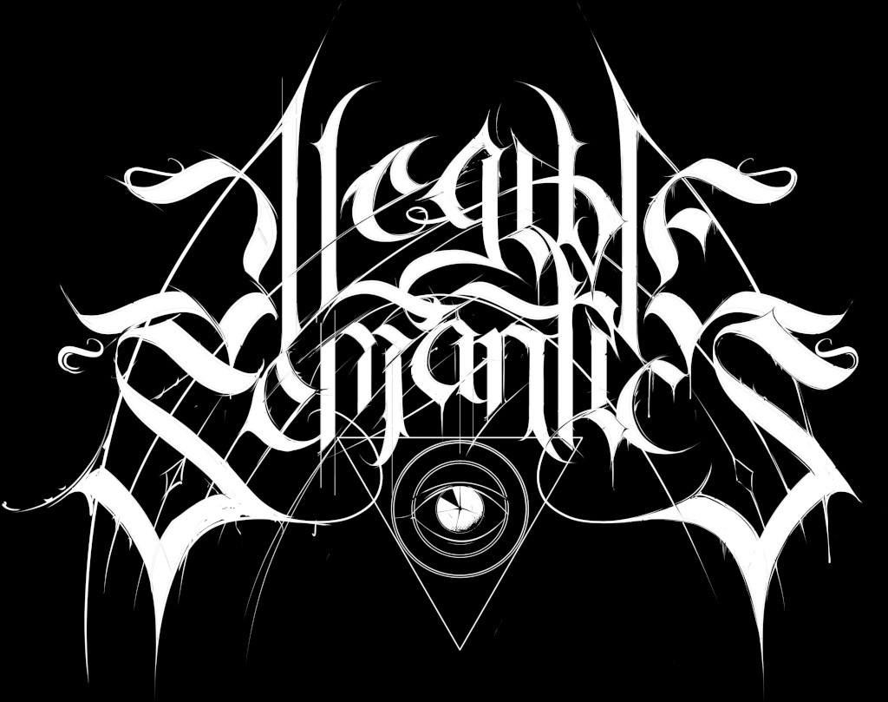
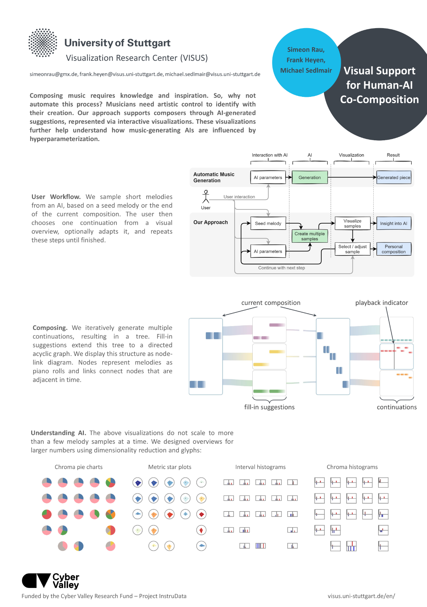
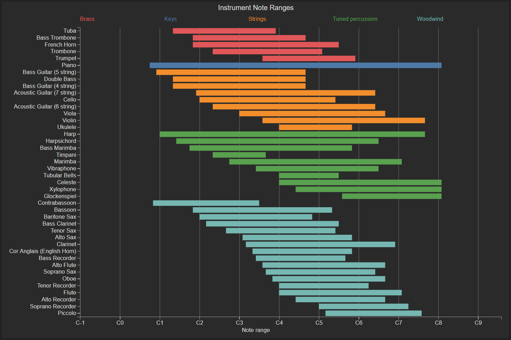
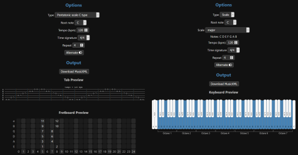
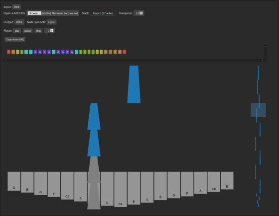
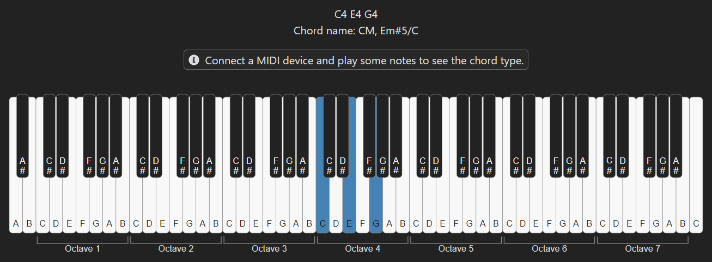
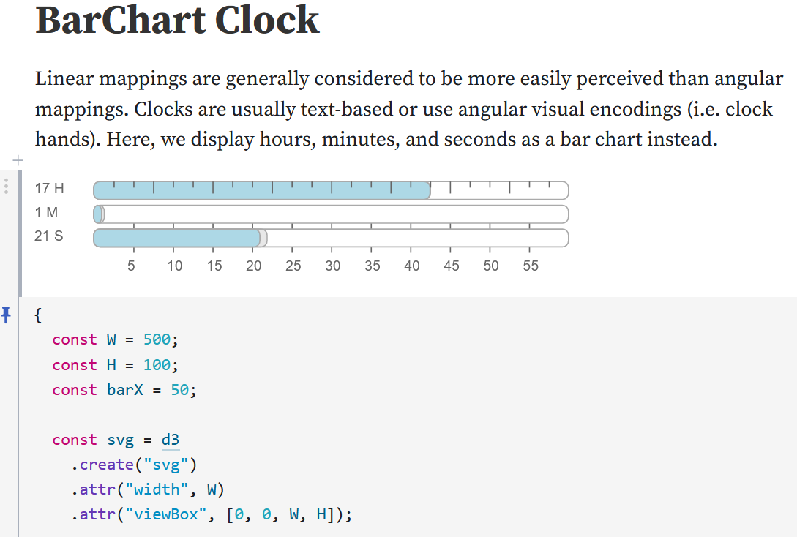
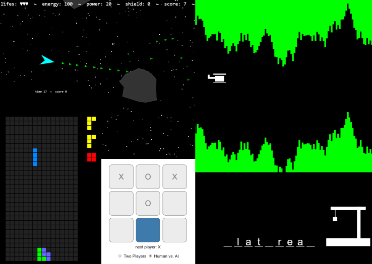

About Me
I'm a PhD candidate at the University of Stuttgart, Germany, whithin the awesome VISVAR research group.
My thesis revolves around supporting people who want to learn a musical instrument, by giving them visual insight into what they play. My VIS'20 poster explains the idea in more detail.
This website shows off some of the stuff I did for work, research, and fun (they overlap sometimes). See also my Observable page, where smaller projects live. I'm a strong believer in open science, open source, and web technoloqy, feel free to re-use anything as long as you cite and/or link the original :).
Publications
ClaVis: An Interactive Visual Comparison System for Classifiers
We propose ClaVis, a visual analytics system for comparative analysis of classification models. ClaVis allows users to visually compare the performance and behavior of tens to hundreds of classifiers trained with different hyperparameter configurations. Our approach is plugin-based and classifier-agnostic and allows users to add their own datasets and classifier implementations. It provides multiple visualizations, including a multivariate ranking, a similarity map, a scatterplot that reveals correlations between parameters and scores, and a training history chart. We demonstrate the effectivity of our approach in multiple case studies for training classification models in the domain of natural language processing.

Supporting Music Education through Visualizations of MIDI Recordings
Musicians mostly have to rely on their ears when they want to analyze what they play, for example to detect errors. Since hearing is sequential, it is not possible to quickly grasp an overview over one or multiple recordings of a whole piece of music at once. We therefore propose various visualizations that allow analyzing errors and stylistic variance. Our current approach focuses on rhythm and uses MIDI data for simplicity.

Illegible Semantics: Exploring the Design Space of Metal Logos
arXiv paper PDF supplemental website
The logos of metal bands can be by turns gaudy, uncouth, or nearly illegible. Yet, these logos work: they communicate sophisticated notions of genre and emotional affect. In this paper we use the design considerations of metal logos to explore the space of "illegible semantics": the ways that text can communicate information at the cost of readability, which is not always the most important objective. In this work, drawing on formative visualization theory, professional design expertise, and empirical assessments of a corpus of metal band logos, we describe a design space of metal logos and present a tool through which logo characteristics can be explored through visualization. We investigate ways in which logo designers imbue their text with meaning and consider opportunities and implications for visualization more widely.
We propose a visual approach for AI-assisted music composition, where the user interactively generates, selects, and adapts short melodies. Based on an entered start melody, we automatically generate multiple continuation samples. Repeating this step and in turn generating continuations for these samples results in a tree or graph of melodies. We visualize this structure with two visualizations, where nodes display the piano roll of the corresponding sample. By interacting with these visualizations, the user can quickly listen to, choose, and adapt melodies, to iteratively create a composition. A third visualization provides an overview over larger numbers of samples, allowing for insights into the AI's predictions and the sample space.
More to come!
Projects
Music-Related
MIDI Piano Roll
Displays a MIDI file as a piano roll visualization in the browser.

Instrument Note Ranges
A visualization of the range of notes different kinds of instruments are able to produce.
MIDI Live Vis
Displays MIDI input from an instrument as a piano roll using the WebMIDI API.
musicvis-lib
Library for web-based music visualization.
Music Exercise Generator
Generates music instrument exercises such as scales at adjustable tempi and outputs them as MusicXML files.
Kalimba Tabs
Colorful kalimba tabs from text or MIDI, notes can be played and visualized with different tempi.
MIDI Chords
Tells you what chord you are playing via WebMIDI.
Misc
Randomized Snowflakes
Snowflakes generated at random using hexagons. Comes with animated drawing!
Mandala
Mandala drawing tool using symmetry along an adjustable number of axes.
BarChart Clock
A linear clock as an alternative to the usual angular visual encoding.
Games
Some classic games written in TypeScript.
